escenario
La escuela tiene su propio teatro y produce obras periódicamente. Los alumnos se forman con horas de vuelo en obras de verdad.
teatro consciente
Hace 10 años, Ezequiel Sagasti, fundó Teatro Consciente. Su propuesta se sostiene sobre estos pilares:
La escuela tiene su propio teatro y produce obras periódicamente. Los alumnos se forman con horas de vuelo en obras de verdad.
Programa con foco en la inserción profesional. Acerca a los alumnos a las dinámicas reales del medio desde el comienzo.
Lo vincular es parte del ADN: una red que se acompaña, alienta y sostiene a lo largo del recorrido.
la formación ocurre en el escenario, no frente a él.
A lo largo de estos años, Ezequiel unió sus estudios en filosofía con el mundo actoral: investigó y desarrolló una nueva vía para la actuación, basada en la fenomenología de la percepción —en particular el pensamiento de Merleau-Ponty— aplicada al trabajo del actor.
Con este enfoque busca potenciar a sus alumnos para alcanzar una forma de actuar que les da la capacidad de habitar la escena, en vez de representarla.
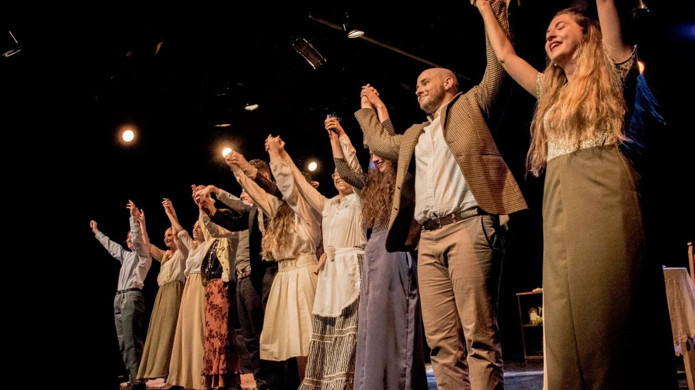
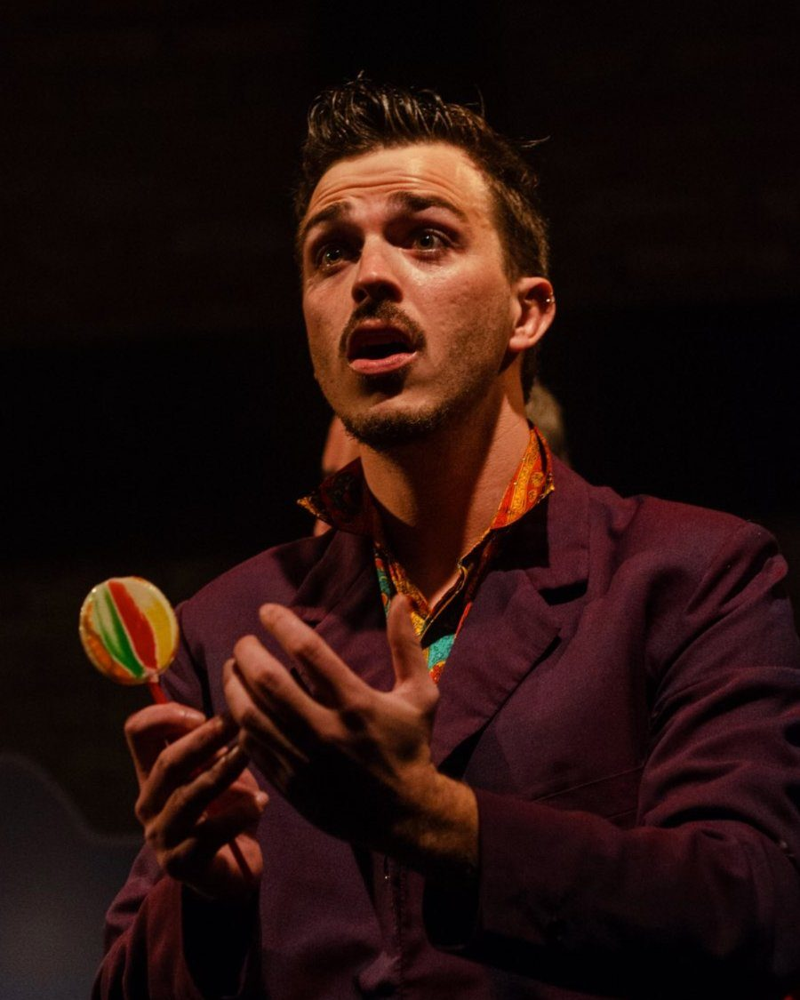
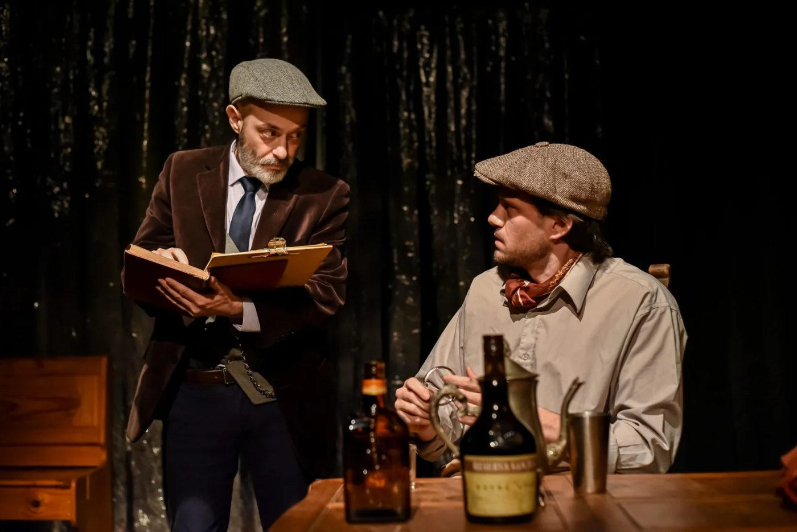
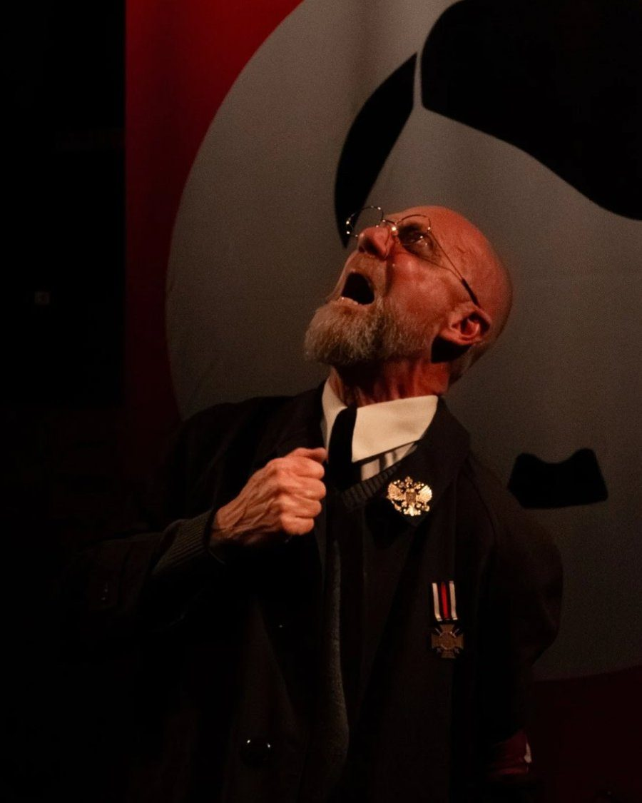
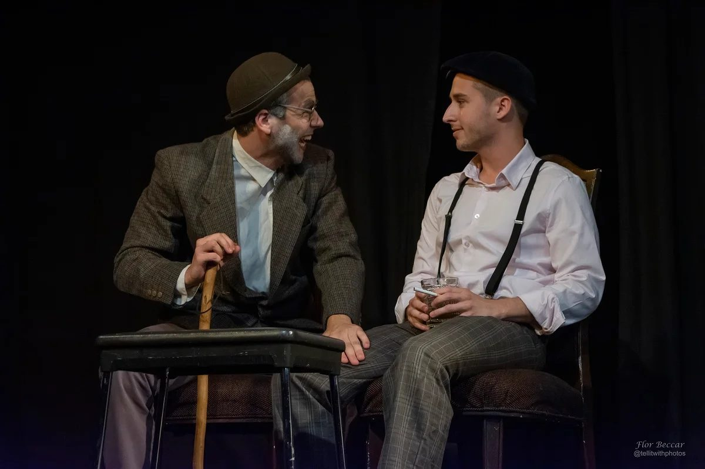
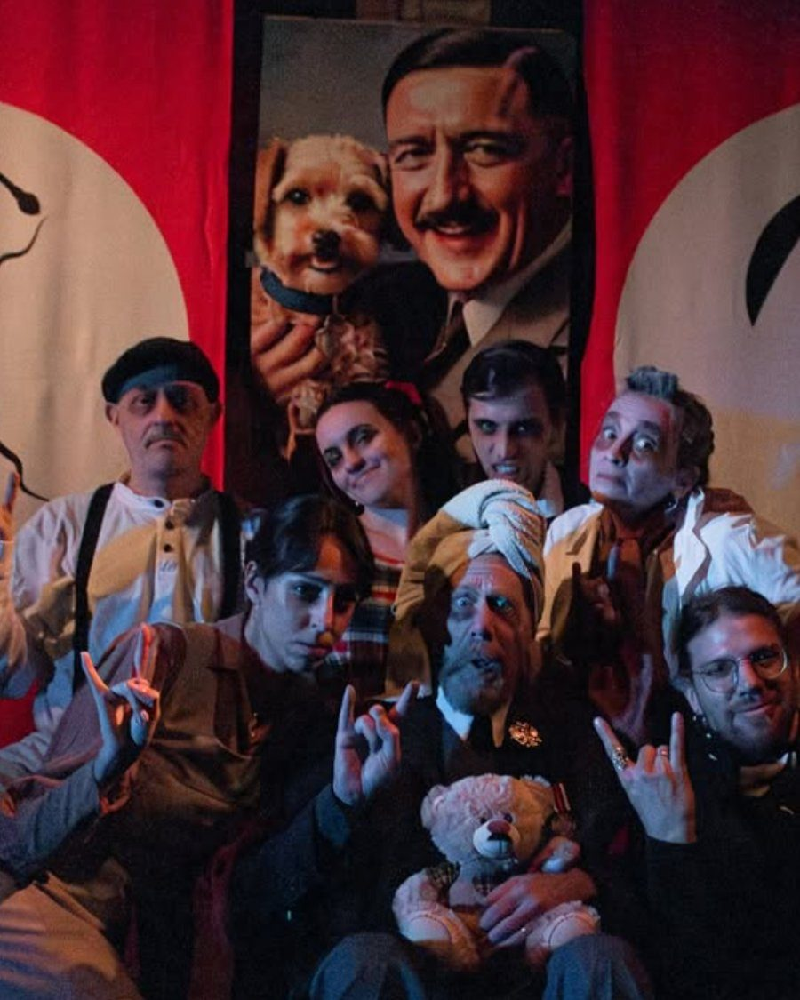
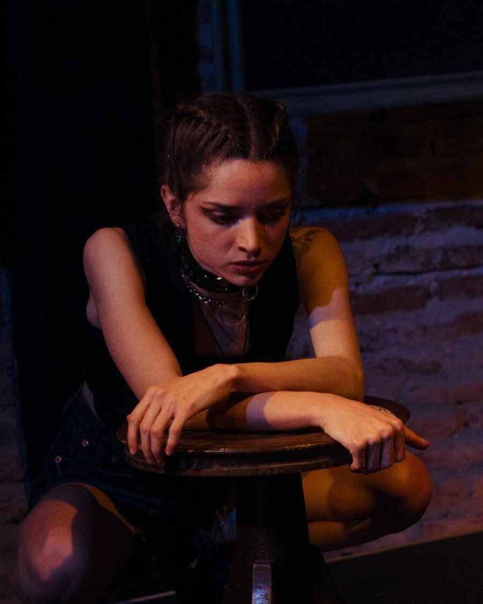
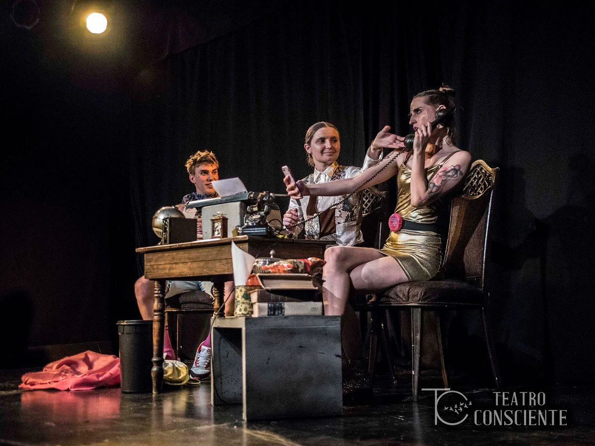
La escuela tiene sede permanente en Pasaje Teatral, el teatro que Sagasti cofundó en 2024 en la zona de Vicente López, Buenos Aires. La sala principal cuenta con capacidad para un público de 50 personas.
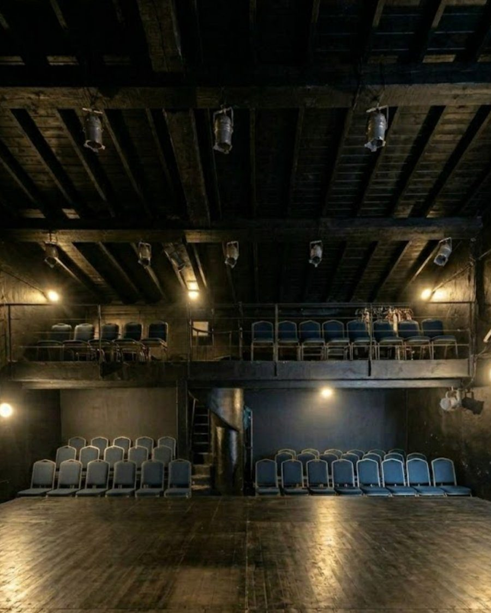
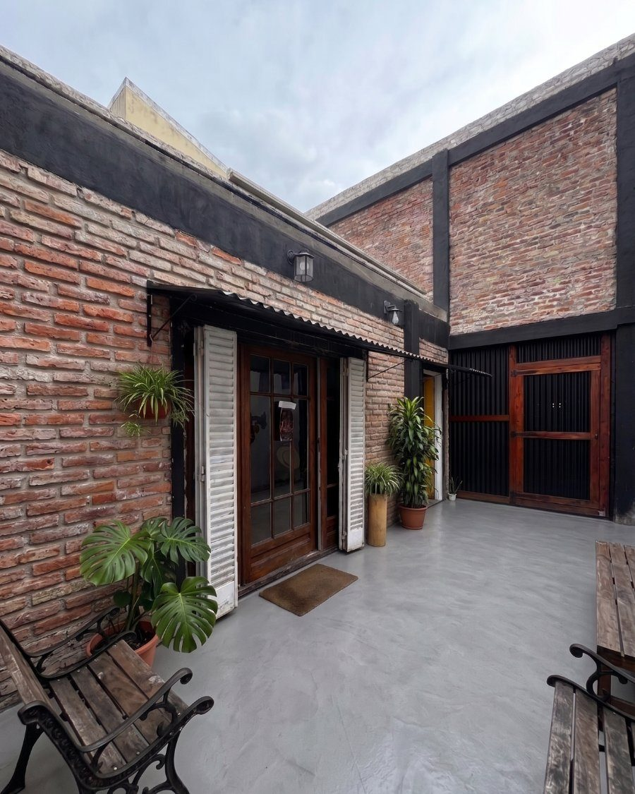
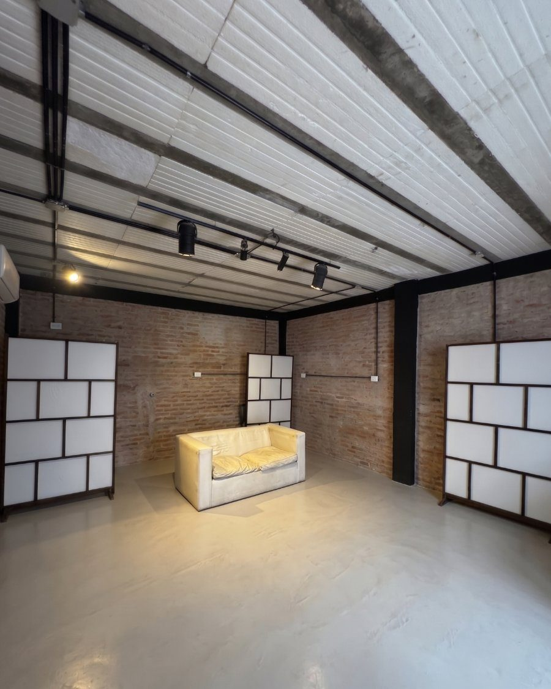
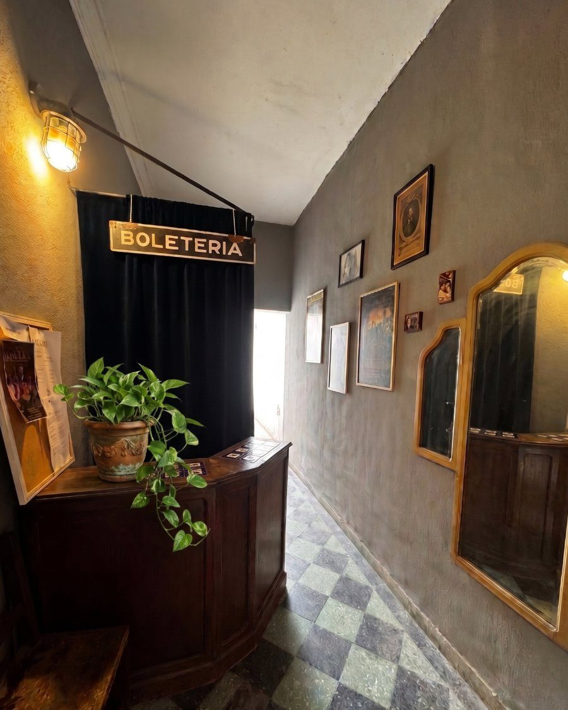